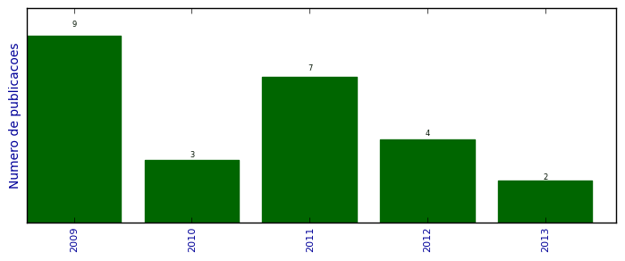

UFSM - Análise do Lattes
Artigos completos publicados em periódicos

Número total de itens: 25
(A1: 1, A2: 0, B1: 0, B2: 1, B3: 1, B4: 1, B5: 13, C: 0, Qualis não identificado: 8)
Legenda Qualis:
- Publicação para a qual o nome exato do Qualis foi identificado: Qualis <estrato>
- Publicação para a qual um nome similar (não exato) do Qualis foi identificado: Qualis <estrato> (nome similar)
- Publicação para a qual nenhum nome do Qualis foi identificado: Qualis não identificado (nome usado na busca)
2013
| 1. | BASTIANI, E. ; LIBRELOTTO, GIOVANI RUBERT. Pervasive Computing Applied to the Care of Patients with Dementia in Homecare Environments. International Journal of UbiComp (IJU). v. 4, p. 1, 2013. [ citações Google Scholar | citações Microsoft Acadêmico | busca Google ] Qualis: Não identificado (International Journal of UbiComp (IJU)) |
| 2. | MARAN, V. ; AUGUSTIN, I. ; SACCOL, D. ; LIBRELOTTO, Giovani R.. Uma definição ontológica de elementos de contexto relevantes na adaptação de documentos em ambientes hospitalares pervasivos. Revista Brasileira de Computação Aplicada. v. 5, p. 1, 2013.  [ citações Google Scholar | citações Microsoft Acadêmico | busca Google ] Qualis: B5 |
2012
| 1. | DALTROZO ILHA, D. ; LIBRELOTTO, Giovani R.. A Escola no Meio Digital: Novos Desafios do Ensinar e do Aprender. Vidya (Santa Maria. Impresso). v. 32, p. 5, 2012. [ citações Google Scholar | citações Microsoft Acadêmico | busca Google ] Qualis: Não identificado (Vidya (Santa Maria. Impresso)) |
| 2. | LOOSE, M. B. ; SACCOL, D. ; Librelotto, G.R.. Ontologias para a Representação de Cláusulas FLWOR XQuery. Revista do CCEI. v. 16, p. 224-237, 2012. [ citações Google Scholar | citações Microsoft Acadêmico | busca Google ] Qualis: B5 |
| 3. | PEREIRA, A. ; FACCIN, L. F. ; Librelotto, G.R. ; AUGUSTIN, I.. Uma Ontologia para um Sistema de Recomendação de Materiais Didáticos em Educação a Distância Sensível ao Estado Afetivo do Aluno. Revista do CCEI. v. 16, p. 324-341, 2012. [ citações Google Scholar | citações Microsoft Acadêmico | busca Google ] Qualis: B5 |
| 4. | SIMAO, E. ; BUGS, C. A. ; Sinigaglia, Marialva ; CASTRO, M. A. A. ; ALVES, R. C. O. ; Librelotto, G.R. ; Mombach, José CM. Induced genome maintenance pathways in pre-cancer tissues describe an anti-cancer barrier in tumor development. Molecular Biosystems (Print). v. 2012, p. 8, 2012. [ citações Google Scholar | citações Microsoft Acadêmico | busca Google ] Qualis: A1 |
2011
| 1. | Bugs, Cristhian A ; Librelotto, Giovani R ; Mombach, José CM. A method to identify important dynamical states in boolean models of regulatory networks: application to regulation of stomata closure by ABA in A. thaliana. BMC Genomics. v. 12, p. S10, 2011. [ citações Google Scholar | citações Microsoft Acadêmico | busca Google ] Qualis: Não identificado (thaliana. BMC Genomics) |
| 2. | CABRAL, H. C. B. ; LIBRELOTTO, Giovani R. ; SIMAO, E. ; SINIGAGLIA, M. ; CASTRO, M. A. A. ; MOMBACH, J. C. M.. O Processamento de uma Ontologia sobre a Integração de Dados de Vias de Interação Molecular Envolvidas em Câncer. Revista Brasileira de Computação Aplicada. v. 3, p. 82-91, 2011. [ citações Google Scholar | citações Microsoft Acadêmico | busca Google ] Qualis: B5 |
| 3. | FREITAS, L. O. ; PEREIRA, R. T. ; AZEVEDO, R. P. ; KURTZ, G. C. ; MARTINI, R. G. ; MOZZAQUATRO, B. ; LIBRELOTTO, Giovani R.. Uma modelagem ontológica de hospitais pervasivos aplicada ao Ontohealth. Revista do CCEI. v. 15, p. 227-294, 2011. [ citações Google Scholar | citações Microsoft Acadêmico | busca Google ] Qualis: B5 |
| 4. | KURTZ, G. C. ; LIBRELOTTO, Giovani R. ; PERLES, L. A. ; SAGRILLO, M. R.. Um Modelo Ontológico para Representação de Conhecimento sobre Cariótipos Humanos. Revista do CCEI. v. 15, p. 378-394, 2011. [ citações Google Scholar | citações Microsoft Acadêmico | busca Google ] Qualis: B5 |
| 5. | MACEDO, R. T. ; FIORIN, A. ; LIBRELOTTO, Giovani R. ; NUNES, R. C. ; AUGUSTIN, I.. O impacto da Web 3.0 nas políticas de controle de acesso a internet. Revista do CCEI. v. 15, p. 169-185, 2011. [ citações Google Scholar | citações Microsoft Acadêmico | busca Google ] Qualis: B5 |
| 6. | MARTINS, M. O. ; VIZZOTTO, J. K. ; LIBRELOTTO, Giovani R.. Simulando o modelo ORCH-OR através de autômatos celulares quânticos. Revista Brasileira de Computação Aplicada. v. 3, p. 74-81, 2011. [ citações Google Scholar | citações Microsoft Acadêmico | busca Google ] Qualis: B5 |
| 7. | PIOVESAN, S. D. ; AMARAL, E. M. H. ; LIBRELOTTO, Giovani R. ; MEDINA, R. D.. Ontologia para o ambiente virtual de aprendizagem Moodle. Cadernos de Informática (UFRGS). v. 6, p. 269-272, 2011. [ citações Google Scholar | citações Microsoft Acadêmico | busca Google ] Qualis: Não identificado (Cadernos de Informática (UFRGS)) |
2010
| 1. | LIBRELOTTO, Giovani R. ; CABRAL, H. C. B. ; SIMAO, E. ; SINIGAGLIA, M. ; CASTRO, M. A. A. ; MOMBACH, J. C. M.. O Projeto de uma Ontologia para Representar o Conhecimento de Vias Metabólicas Relativas ao Câncer. Revista do CCEI. v. 14, p. 129-147, 2010. [ citações Google Scholar | citações Microsoft Acadêmico | busca Google ] Qualis: B5 |
| 2. | LIBRELOTTO, Giovani R. ; KURTZ, G. C.. Definindo Correlações entre Palavras-Chave e Autores no PubMed. Gestão (Curitiba). v. 11, p. 47-57, 2010. [ citações Google Scholar | citações Microsoft Acadêmico | busca Google ] Qualis: Não identificado (Gestão (Curitiba)) |
| 3. | Simão, Éder M. ; Cabral, Heleno B. ; Castro, Mauro A.A. ; Sinigaglia, Marialva ; Mombach, José C.M. ; LIBRELOTTO, Giovani R.. Modeling the Human Genome Maintenance network. Physica. A (Print). v. 389, p. 4188-4194, 2010. [ citações Google Scholar | citações Microsoft Acadêmico | busca Google ] Qualis: B2 |
2009
| 1. | FIORIN, D. ; CORDENONZI, W. H. ; LIBRELOTTO, Giovani R.. Criando um Modelo Relacional para o PubMed Central. Disciplinarum Scientia. Série Ciências Naturais e Tecnológicas. v. 8, p. 155-162, 2009. [ citações Google Scholar | citações Microsoft Acadêmico | busca Google ] Qualis: Não identificado (Disciplinarum Scientia. Série Ciências Naturais e Tecnológicas) |
| 2. | LIBRELOTTO, Giovani R. ; Azevedo, R.P. ; Ramalho, J.C. ; Henriques, P.R.. Topic maps constraint languages: understanding and comparing. International Journal of Reasoning-Based Intelligent Systems (Print). v. 1, p. 173-181, 2009. [ citações Google Scholar | citações Microsoft Acadêmico | busca Google ] Qualis: B4 (International Journal of Reasoning Based Intelligent Systems (Print)) |
| 3. | LIBRELOTTO, Giovani R. ; GASSEN, J. B.. XSTM Editor Um Ambiente para Especificação de Regras para a Extração de Topic Maps. Revista do CCEI. v. 13, p. 98-106, 2009. [ citações Google Scholar | citações Microsoft Acadêmico | busca Google ] Qualis: B5 |
| 4. | LIBRELOTTO, Giovani R. ; GASSEN, J. B. ; FREITAS, L. O. ; AUGUSTIN, I.. Geração de Topic Maps dirigidos por Ontologias para a Computação Sensível ao Contexto. Revista do CCEI. v. 13, p. 61-69, 2009. [ citações Google Scholar | citações Microsoft Acadêmico | busca Google ] Qualis: B5 |
| 5. | LIBRELOTTO, Giovani R. ; GASSEN, J. B. ; FREITAS, L. O. ; VIZZOTTO, J. K. ; SILVA, F. L. ; AUGUSTIN, I.. Aplicando o OntoHealth para o Processamento e Consultas de Ontologias para Ambientes Hospitalares Pervasivos. iSys: Revista Brasileira de Sistemas de Informação. v. 2, p. 51-60, 2009. [ citações Google Scholar | citações Microsoft Acadêmico | busca Google ] Qualis: B3 |
| 6. | LIBRELOTTO, Giovani R. ; GASSEN, J. B. ; RAMALHO, José Carlos ; HENRIQUES, Pedro Rangel. Topic Maps Dirigidos por Ontologias. Revista de Ciência Tecnologia. v. 15, p. 79-88, 2009. [ citações Google Scholar | citações Microsoft Acadêmico | busca Google ] Qualis: Não identificado (Revista de Ciência Tecnologia) |
| 7. | LIBRELOTTO, Giovani R. ; LOPES, Sandra Cristina Gonçalves Silva ; KURTZ, G. C. ; TURCHETTI, Rogério Correa ; HENRIQUES, Pedro Rangel. Aplicando Topic Maps para a Representação de Mapas de Conceitos. Vidya (Santa Maria). v. 27, p. 93-107, 2009. [ citações Google Scholar | citações Microsoft Acadêmico | busca Google ] Qualis: Não identificado (Vidya (Santa Maria)) |
| 8. | LIBRELOTTO, Giovani R. ; SILVEIRA, Leandro ; CABRAL, H. C. B.. Comparando Linguagens para o Armazenamento de Informação Genômica. Revista do CCEI. v. 13, p. 23-30, 2009. [ citações Google Scholar | citações Microsoft Acadêmico | busca Google ] Qualis: B5 |
| 9. | PASETTO, L. F. ; TURCHETTI, Rogério Correa ; LIBRELOTTO, Giovani R. ; BAGGIO, J. E.. Localização Física de Dispositivos em Computação Pervasiva utilizando o Gerenciador de Rede WICD. Revista do CCEI. v. 13, p. 79-88, 2009. [ citações Google Scholar | citações Microsoft Acadêmico | busca Google ] Qualis: B5 |
(*) Relatório criado com produções desde 2009 até HOJE
Data de processamento: 11/04/2014 11:02:32